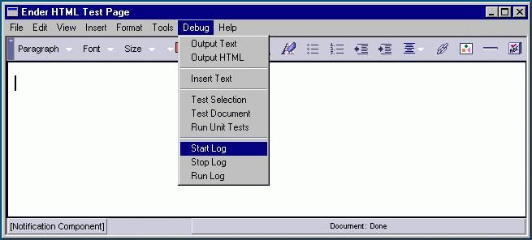
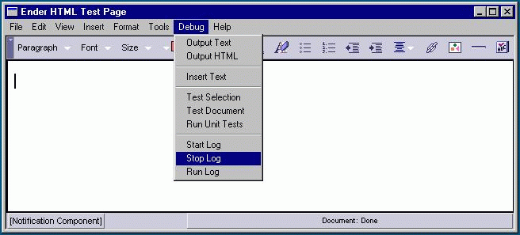
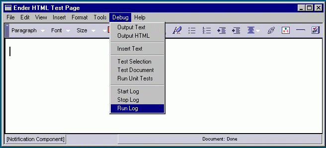

The Editor API Logging Mechanism
Kin BlasNetscape Communications
Corporation
Follow-up and discussion on
netscape.public.mozilla.editor
The Editor
API Logging Mechanism allows a user to record and playback all the edits
made to a document. This feature can be used by QA to create Editor test
scripts, and scripts that can be used by engineers to recreate bugs.
Recording
and Playback
To begin recording, select "Start Log" from the
Debug menu:

This will create a journal.js file in the same directory as the apprunner
executable which will contain a description of all the edits made to the
current document.
To stop recording, select "Stop Log" from the
Debug menu:

To playback the edits you just made, simply restore the document
back to the state it was when you started recording, via undo, or just reload
the entire document, then select "Run Log" from the Debug menu:

It's important to note that the log information contained in the
journal.js file is tied to the document used and the state it was in just
before you enabled recording. If you try to replay the edits on a different
file, or on the document while it is in any other state, unpredictable results
may happen.
Implementation
Details
If you take a look at the contents of the journal.js file, you will see that
it is just JavaScript. Playback involves loading this file and calling eval()
so that the statements in the journal.js file get executed in the editor's
JavaScript context and have access to the editor's public methods.
The
actual logging mechanism involves two parts:
- Calls to nsJSEditorLog from the various nsIEditor, nsITextEditor, and
nsIHTMLEditor methods that modify the document.
- An nsITransactionListener that listens to the editor's transaction
manager.
The
nsJSEditorLog class
implements the
nsIHTMLEditor interface
because it contained the union of all methods from nsIEditor, nsITextEditor,
and nsIHTMLEditor that could modify the document. Implementing nsJSEditorLog
with the nsIHTMLEditor interface also forces all developers who change these
editor interfaces, to update the nsJSEditorLog implementation whenever a
method is added, or it's signature changed.
As stated above, calls
to nsJSEditorLog methods were added to the implementations for nsIEditor,
nsITextEditor and nsIHTMLEditor. This involved adding code like the following
to each method that modifies the content tree:
NS_IMETHODIMP
InsertText(const nsString& aStringToInsert)
{
#ifdef ENABLE_JS_EDITOR_LOG
if (mJSEditorLog)
mJSEditorLog->InsertText(aStringToInsert);
#endif // ENABLE_JS_EDITOR_LOG
...
}
If you look at the
implementation for
nsJSEditorLog, you will see that each of it's methods write out the JavaScript
that recreates the call to the method.
The
nsJSTxnLog class
implements the
nsITransactionListener interface.
When logging is started, we add nsJSTxnLog as a listener to the editor's
transaction manager so that it gets notified whenever a transaction is executed,
undone, or redone. nsJSTxnLog's main purpose is to write out JavaScript
comments that describe the transaction being executed. Since one editor
method call can result in several transactions being executed, these comments
can aid engineers in seeing what transactions are being executed, and identifying
which transaction is causing a specific problem.
Just for kicks,
here's a link to the
journal.js file generated
during the creation of this document. To run it, Shift-Click on the link,
then save it in the directory containing the apprunner executable. Start
up the editor, then select Debug->Run Log from the menus.